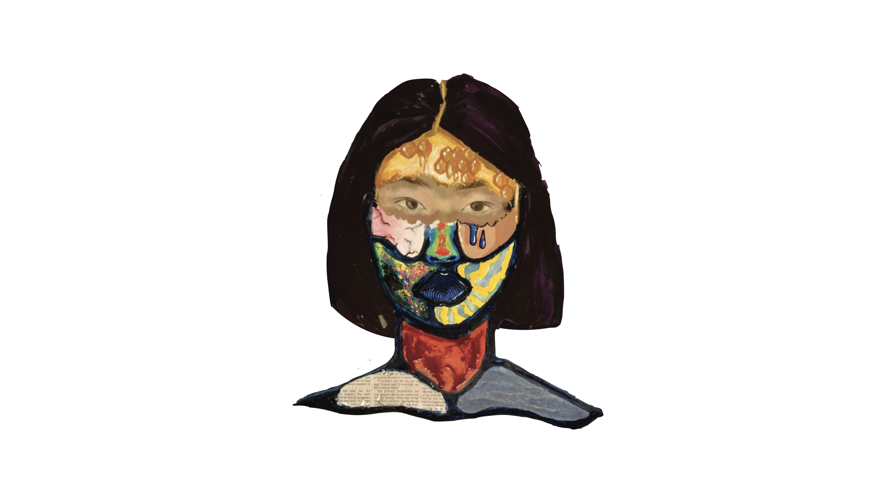
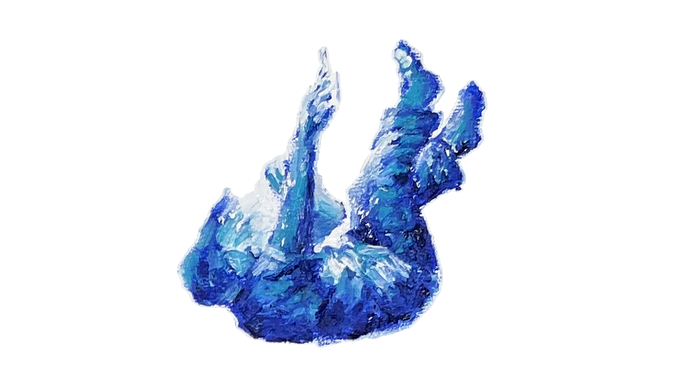

Volume LXIII | 2025 Visit Page ->
The plight of teenage life is hardly undocumented. Any younger sibling could tell you that
early on, being a “teen” denotes groans, complaints, and seemingly endless eye-rolls. Yet, Vol. LXIII
delves deeper. Having just turned 18 (and grown a wisdom tooth!) we can personally disclose that
adolescence is, above all else, confusing. Figuring yourself out isn’t so easy when you don’t look, act, or
even feel like the person you’ve always been. It’s only natural to fear a reality where everything seems
wrong, to covet a fantasy in which the right choice exists and you know how to make it. These dreads
and dreams percolate inside our minds and our hearts and eventually they spill over, coloring our words,
actions, and selves. But from poem to painting to performance, what BHS’ fledgling artists teach us is
that it is when we retreat into ourselves that we can finally become acquainted with who we are. And
when our identity doesn’t seem so foggy, the rest of the world comes into focus.

Volume LXII | 2024 Visit Page ->
Art in its purest form, draws from the human experience. The human experience of
our high school artists and writers represents the culmination of growth. Every piece of art,
from poem to photograph to painting, comes from a teenager who is either growing up too fast
or not fast enough. In this magazine, we attempt to capture the essence of growth. It is a fickle
thing: something that disintegrates before our eyes and slips through our fingers when we hold
it too tight. We gain an intimate insight into the influence of childhood worldliness, memories
that are representative of our aspirations and a burgeoning growth that remains ubiquitous
throughout time. It is the unprecedented, inevitable thing that makes the human experience.
We, the staff of Briars and Ivy, hope that you can connect with our experiences, no matter
where you are on your own journey.
